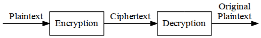
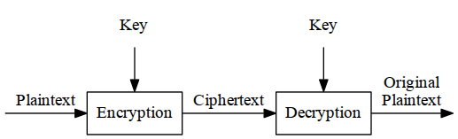
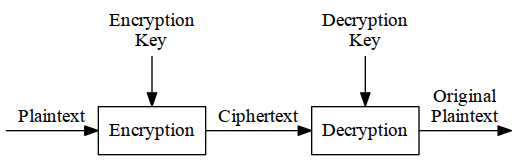

Suppose a sender wants to send a message to a receiver. Moreover, this sender wants to send the message securely: She wants to make sure an eavesdropper cannot read the message.
A message is plaintext (sometimes called cleartext). The process of disguising a message in such a way as to hide its substance is encryption. An encrypted message is ciphertext. The process of turning ciphertext back into plaintext is decryption. This is all shown in Figure 1.1.

Figure 1.1 Encryption and Decryption.
(If you want to follow the ISO 7498-2 standard, use the terms “encipher” and “decipher.” It seems that some cultures find the terms “encrypt” and “decrypt” offensive, as they refer to dead bodies.)
The art and science of keeping messages secure is cryptography, and it is practiced by cryptographers. Cryptanalysts are practitioners of cryptanalysis, the art and science of breaking ciphertext; that is, seeing through the disguise. The branch of mathematics encompassing both cryptography and cryptanalysis is cryptology and its practitioners are cryptologists. Modern cryptologists are generally trained in theoretical mathematics — they have to be.
Plaintext is denoted by M, for message, or P, for plaintext. It can be a stream of bits, a text file, a bitmap, a stream of digitized voice, a digital video image...whatever. As far as a computer is concerned, M is simply binary data. (After this chapter, this book concerns itself with binary data and computer cryptography.) The plaintext can be intended for either transmission or storage. In any case, M is the message to be encrypted.
Ciphertext is denoted by C. It is also binary data: sometimes the same size as M, sometimes larger. (By combining encryption with compression, C may be smaller than M. However, encryption does not accomplish this.) The encryption function E, operates on M to produce C. Or, in mathematical notation:
E(M) = C
In the reverse process, the decryption function D operates on C to produce M:
D(C) = M
Since the whole point of encrypting and then decrypting a message is to recover the original plaintext, the following identity must hold true:
D(E(M)) = M
In addition to providing confidentiality, cryptography is often asked to do other jobs:
These are vital requirements for social interaction on computers, and are analogous to face-to-face interactions. That someone is who he says he is...that someone’s credentials — whether a driver’s license, a medical degree, or a passport — are valid...that a document purporting to come from a person actually came from that person.... These are the things that authentication, integrity, and nonrepudiation provide.
A cryptographic algorithm, also called a cipher, is the mathematical function used for encryption and decryption. (Generally, there are two related functions: one for encryption and the other for decryption.)
If the security of an algorithm is based on keeping the way that algorithm works a secret, it is a restricted algorithm. Restricted algorithms have historical interest, but are woefully inadequate by today’s standards. A large or changing group of users cannot use them, because every time a user leaves the group everyone else must switch to a different algorithm. If someone accidentally reveals the secret, everyone must change their algorithm.
Even more damning, restricted algorithms allow no quality control or standardization. Every group of users must have their own unique algorithm. Such a group can’t use off-the-shelf hardware or software products; an eavesdropper can buy the same product and learn the algorithm. They have to write their own algorithms and implementations. If no one in the group is a good cryptographer, then they won’t know if they have a secure algorithm.
Despite these major drawbacks, restricted algorithms are enormously popular for low-security applications. Users either don’t realize or don’t care about the security problems inherent in their system.
Modern cryptography solves this problem with a key, denoted by K. This key might be any one of a large number of values. The range of possible values of the key is called the keyspace. Both the encryption and decryption operations use this key (i.e., they are dependent on the key and this fact is denoted by the k subscript), so the functions now become:
EK(M) = C DK(C) = M
Those functions have the property that (see Figure 1.2):
DK(EK(M)) = M

Figure 1.2 Encryption and decryption with a key.
Some algorithms use a different encryption key and decryption key (see Figure 1.3). That is, the encryption key, K1, is different from the corresponding decryption key, K2. In this case:
EK1(M) = C DK2(C) = M DK2(EK1(M)) = M

Figure 1.3 Encryption and decryption with two different keys.
All of the security in these algorithms is based in the key (or keys); none is based in the details of the algorithm. This means that the algorithm can be published and analyzed. Products using the algorithm can be mass-produced. It doesn’t matter if an eavesdropper knows your algorithm; if she doesn’t know your particular key, she can’t read your messages.
A cryptosystem is an algorithm, plus all possible plaintexts, ciphertexts, and keys.
There are two general types of key-based algorithms: symmetric and public-key. Symmetric algorithms, sometimes called conventional algorithms, are algorithms where the encryption key can be calculated from the decryption key and vice versa. In most symmetric algorithms, the encryption key and the decryption key are the same. These algorithms, also called secret-key algorithms, single-key algorithms, or one-key algorithms, require that the sender and receiver agree on a key before they can communicate securely. The security of a symmetric algorithm rests in the key; divulging the key means that anyone could encrypt and decrypt messages. As long as the communication needs to remain secret, the key must remain secret.
Encryption and decryption with a symmetric algorithm are denoted by:
EK(M) = C DK(C) = M
Symmetric algorithms can be divided into two categories. Some operate on the plaintext a single bit (or sometimes byte) at a time; these are called stream algorithms or stream ciphers. Others operate on the plaintext in groups of bits. The groups of bits are called blocks, and the algorithms are called block algorithms or block ciphers. For modern computer algorithms, a typical block size is 64 bits — large enough to preclude analysis and small enough to be workable. (Before computers, algorithms generally operated on plaintext one character at a time. You can think of this as a stream algorithm operating on a stream of characters.)
Public-key algorithms (also called asymmetric algorithms) are designed so that the key used for encryption is different from the key used for decryption. Furthermore, the decryption key cannot (at least in any reasonable amount of time) be calculated from the encryption key. The algorithms are called “public-key” because the encryption key can be made public: A complete stranger can use the encryption key to encrypt a message, but only a specific person with the corresponding decryption key can decrypt the message. In these systems, the encryption key is often called the public key, and the decryption key is often called the private key. The private key is sometimes also called the secret key, but to avoid confusion with symmetric algorithms, that tag won’t be used here.
Encryption using public key K is denoted by:
EK(M) = C
Even though the public key and private key are different, decryption with the corresponding private key is denoted by:
DK(C) = M
Sometimes, messages will be encrypted with the private key and decrypted with the public key; this is used in digital signatures (see Section 2.6). Despite the possible confusion, these operations are denoted by, respectively:
EK(M) = C DK(C) = M
The whole point of cryptography is to keep the plaintext (or the key, or both) secret from eavesdroppers (also called adversaries, attackers, interceptors, interlopers, intruders, opponents, or simply the enemy). Eavesdroppers are assumed to have complete access to the communications between the sender and receiver.
Cryptanalysis is the science of recovering the plaintext of a message without access to the key. Successful cryptanalysis may recover the plaintext or the key. It also may find weaknesses in a cryptosystem that eventually lead to the previous results. (The loss of a key through noncryptanalytic means is called a compromise.)
An attempted cryptanalysis is called an attack. A fundamental assumption in cryptanalysis, first enunciated by the Dutchman A. Kerckhoffs in the nineteenth century, is that the secrecy must reside entirely in the key [794]. Kerckhoffs assumes that the cryptanalyst has complete details of the cryptographic algorithm and implementation. (Of course, one would assume that the CIA does not make a habit of telling Mossad about its cryptographic algorithms, but Mossad probably finds out anyway.) While real-world cryptanalysts don’t always have such detailed information, it’s a good assumption to make. If others can’t break an algorithm, even with knowledge of how it works, then they certainly won’t be able to break it without that knowledge.
There are four general types of cryptanalytic attacks. Of course, each of them assumes that the cryptanalyst has complete knowledge of the encryption algorithm used:
Ciphertext-only attack. The cryptanalyst has the ciphertext of several messages, all of which have been encrypted using the same encryption algorithm. The cryptanalyst’s job is to recover the plaintext of as many messages as possible, or better yet to deduce the key (or keys) used to encrypt the messages, in order to decrypt other messages encrypted with the same keys.
Given: C1 = Ek(P1), C2 = Ek(P2), ... Ci = Ek(Pi)
Deduce: Either P1, P2, ... Pi; k; or an algorithm to infer Pi+1 from Ci+1 = Ek(Pi+1)
Given: P1, C1 = Ek(P1), P2, C2 = Ek(P2), ... Pi, Ci = Ek(Pi)
Deduce: Either k, or an algorithm to infer Pi+1 from Ci+1 = Ek(Pi+1)
Chosen-plaintext attack. The cryptanalyst not only has access to the ciphertext and associated plaintext for several messages, but he also chooses the plaintext that gets encrypted. This is more powerful than a known-plaintext attack, because the cryptanalyst can choose specific plaintext blocks to encrypt, ones that might yield more information about the key. His job is to deduce the key (or keys) used to encrypt the messages or an algorithm to decrypt any new messages encrypted with the same key (or keys).
Given: P1, C1 = Ek(P1), P2, C2 = Ek(P2), ... Pi, Ci = Ek(Pi), where the cryptanalyst gets to choose P1, P2, ... Pi
Deduce: Either k, or an algorithm to infer Pi+1 from Ci+1 = Ek(Pi+1)
There are at least three other types of cryptanalytic attack.
Chosen-ciphertext attack. The cryptanalyst can choose different ciphertexts to be decrypted and has access to the decrypted plaintext. For example, the cryptanalyst has access to a tamperproof box that does automatic decryption. His job is to deduce the key.
Given: C1, P1 = Dk(C1), C2, P2 = Dk(C2), ... Ci, Pi = Dk(Ci)
Deduce: k
This attack is primarily applicable to public-key algorithms and will be discussed in Section 19.3. A chosen-ciphertext attack is sometimes effective against a symmetric algorithm as well. (Sometimes a chosen-plaintext attack and a chosen-ciphertext attack are together known as a chosen-text attack.)
Known-plaintext attacks and chosen-plaintext attacks are more common than
you might think. It is not unheard-of for a cryptanalyst to get a plaintext
message that has been encrypted or to bribe someone to encrypt a chosen
message. You may not even have to bribe someone; if you give a message to
an ambassador, you will probably find that it gets encrypted and sent back to
his country for consideration. Many messages have standard beginnings and
endings that might be known to the cryptanalyst. Encrypted source code is
especially vulnerable because of the regular appearance of keywords: #define,
struct, else, return. Encrypted executable code has the same kinds of problems:
functions, loop structures, and so on. Known-plaintext attacks (and even
chosen-plaintext attacks) were successfully used against both the Germans and
the Japanese during World War II. David Kahn’s books [794,795,796] have
historical examples of these kinds of attacks.
And don’t forget Kerckhoffs’s assumption: If the strength of your new cryptosystem relies on the fact that the attacker does not know the algorithm’s inner workings, you’re sunk. If you believe that keeping the algorithm’s insides secret improves the security of your cryptosystem more than letting the academic community analyze it, you’re wrong. And if you think that someone won’t disassemble your code and reverse-engineer your algorithm, you’re naïve. (In 1994 this happened with the RC4 algorithm — see Section 17.1.) The best algorithms we have are the ones that have been made public, have been attacked by the world’s best cryptographers for years, and are still unbreakable. (The National Security Agency keeps their algorithms secret from outsiders, but they have the best cryptographers in the world working within their walls — you don’t. Additionally, they discuss their algorithms with one another, relying on peer review to uncover any weaknesses in their work.)
Cryptanalysts don’t always have access to the algorithms, as when the United States broke the Japanese diplomatic code PURPLE during World War II [794] — but they often do. If the algorithm is being used in a commercial security program, it is simply a matter of time and money to disassemble the program and recover the algorithm. If the algorithm is being used in a military communications system, it is simply a matter of time and money to buy (or steal) the equipment and reverse-engineer the algorithm.
Those who claim to have an unbreakable cipher simply because they can’t break it are either geniuses or fools. Unfortunately, there are more of the latter in the world. Beware of people who extol the virtues of their algorithms, but refuse to make them public; trusting their algorithms is like trusting snake oil.
Good cryptographers rely on peer review to separate the good algorithms from the bad.
Different algorithms offer different degrees of security; it depends on how hard they are to break. If the cost required to break an algorithm is greater than the value of the encrypted data, then you’re probably safe. If the time required to break an algorithm is longer than the time the encrypted data must remain secret, then you’re probably safe. If the amount of data encrypted with a single key is less than the amount of data necessary to break the algorithm, then you’re probably safe.
I say “probably” because there is always a chance of new breakthroughs in cryptanalysis. On the other hand, the value of most data decreases over time. It is important that the value of the data always remain less than the cost to break the security protecting it.
Lars Knudsen classified these different categories of breaking an algorithm. In decreasing order of severity [858]:
An algorithm is unconditionally secure if, no matter how much ciphertext a cryptanalyst has, there is not enough information to recover the plaintext. In point of fact, only a one-time pad (see Section 1.5) is unbreakable given infinite resources. All other cryptosystems are breakable in a ciphertext-only attack, simply by trying every possible key one by one and checking whether the resulting plaintext is meaningful. This is called a brute-force attack (see Section 7.1).
Cryptography is more concerned with cryptosystems that are computationally infeasible to break. An algorithm is considered computationally secure (sometimes called strong) if it cannot be broken with available resources, either current or future. Exactly what constitutes “available resources” is open to interpretation.
You can measure the complexity (see Section 11.1) of an attack in different ways:
As a rule of thumb, the complexity of an attack is taken to be the minimum of these three factors. Some attacks involve trading off the three complexities: A faster attack might be possible at the expense of a greater storage requirement.
Complexities are expressed as orders of magnitude. If an algorithm has a processing complexity of 2128, then 2128 operations are required to break the algorithm. (These operations may be complex and time-consuming.) Still, if you assume that you have enough computing speed to perform a million operations every second and you set a million parallel processors against the task, it will still take over 1019 years to recover the key. That’s a billion times the age of the universe.
While the complexity of an attack is constant (until some cryptanalyst finds a better attack, of course), computing power is anything but. There have been phenomenal advances in computing power during the last half-century and there is no reason to think this trend won’t continue. Many cryptanalytic attacks are perfect for parallel machines: The task can be broken down into billions of tiny pieces and none of the processors need to interact with each other. Pronouncing an algorithm secure simply because it is infeasible to break, given current technology, is dicey at best. Good cryptosystems are designed to be infeasible to break with the computing power that is expected to evolve many years in the future.
Historically, a code refers to a cryptosystem that deals with linguistic units: words, phrases, sentences, and so forth. For example, the word “OCELOT” might be the ciphertext for the entire phrase “TURN LEFT 90 DEGREES,” the word “LOLLIPOP” might be the ciphertext for “TURN RIGHT 90 DEGREES,” and the words “BENT EAR” might be the ciphertext for “HOWITZER.” Codes of this type are not discussed in this book; see [794,795]. Codes are only useful for specialized circumstances. Ciphers are useful for any circumstance. If your code has no entry for “ANTEATERS,” then you can’t say it. You can say anything with a cipher.
Steganography serves to hide secret messages in other messages, such that the secret’s very existence is concealed. Generally the sender writes an innocuous message and then conceals a secret message on the same piece of paper. Historical tricks include invisible inks, tiny pin punctures on selected characters, minute differences between handwritten characters, pencil marks on typewritten characters, grilles which cover most of the message except for a few characters, and so on.
More recently, people are hiding secret messages in graphic images. Replace the least significant bit of each byte of the image with the bits of the message. The graphical image won’t change appreciably — most graphics standards specify more gradations of color than the human eye can notice — and the message can be stripped out at the receiving end. You can store a 64-kilobyte message in a 1024 × 1024 grey-scale picture this way. Several public-domain programs do this sort of thing.
Peter Wayner’s mimic functions obfuscate messages. These functions modify a message so that its statistical profile resembles that of something else: the classifieds section of The New York Times, a play by Shakespeare, or a newsgroup on the Internet [1584,1585]. This type of steganography won’t fool a person, but it might fool some big computers scanning the Internet for interesting messages.
Before computers, cryptography consisted of character-based algorithms. Different cryptographic algorithms either substituted characters for one another or transposed characters with one another. The better algorithms did both, many times each.
Things are more complex these days, but the philosophy remains the same. The primary change is that algorithms work on bits instead of characters. This is actually just a change in the alphabet size: from 26 elements to two elements. Most good cryptographic algorithms still combine elements of substitution and transposition.
A substitution cipher is one in which each character in the plaintext is substituted for another character in the ciphertext. The receiver inverts the substitution on the ciphertext to recover the plaintext.
In classical cryptography, there are four types of substitution ciphers:
The famous Caesar Cipher, in which each plaintext character is replaced by the character three to the right modulo 26 (“A” is replaced by “D,” “B” is replaced by “E,”..., “W” is replaced by “Z,” “X” is replaced by “A,” “Y” is replaced by “B,” and “Z” is replaced by “C”) is a simple substitution cipher. It’s actually even simpler, because the ciphertext alphabet is a rotation of the plaintext alphabet and not an arbitrary permutation.
ROT13 is a simple encryption program commonly found on UNIX systems; it is also a simple substitution cipher. In this cipher, “A” is replaced by “N,” “B” is replaced by “O,” and so on. Every letter is rotated 13 places.
Encrypting a file twice with ROT13 restores the original file.
P = ROT13(ROT13(P))
ROT13 is not intended for security; it is often used in Usenet posts to hide potentially offensive text, to avoid giving away the solution to a puzzle, and so forth.
Simple substitution ciphers can be easily broken because the cipher does not hide the underlying frequencies of the different letters of the plaintext. All it takes is about 25 English characters before a good cryptanalyst can reconstruct the plaintext [1434]. An algorithm for solving these sorts of ciphers can be found in [578,587,1600,78,1475,1236,880]. A good computer algorithm is [703].
Homophonic substitution ciphers were used as early as 1401 by the Duchy of Mantua [794]. They are much more complicated to break than simple substitution ciphers, but still do not obscure all of the statistical properties of the plaintext language. With a known-plaintext attack, the ciphers are trivial to break. A ciphertext-only attack is harder, but only takes a few seconds on a computer. Details are in [1261].
Polygram substitution ciphers are ciphers in which groups of letters are encrypted together. The Playfair cipher, invented in 1854, was used by the British during World War I [794]. It encrypts pairs of letters together. Its cryptanalysis is discussed in [587,1475,880]. The Hill cipher is another example of a polygram substitution cipher [732]. Sometimes you see Huffman coding used as a cipher; this is an insecure polygram substitution cipher.
Polyalphabetic substitution ciphers were invented by Leon Battista in 1568 [794]. They were used by the Union army during the American Civil War. Despite the fact that they can be broken easily [819,577,587,794] (especially with the help of computers), many commercial computer security products use ciphers of this form [1387,1390,1502]. (Details on how to break this encryption scheme, as used in WordPerfect, can be found in [135,139].) The Vigenère cipher, first published in 1586, and the Beaufort cipher are also examples of polyalphabetic substitution ciphers.
Polyalphabetic substitution ciphers have multiple one-letter keys, each of which is used to encrypt one letter of the plaintext. The first key encrypts the first letter of the plaintext, the second key encrypts the second letter of the plaintext, and so on. After all the keys are used, the keys are recycled. If there were 20 one-letter keys, then every twentieth letter would be encrypted with the same key. This is called the period of the cipher. In classical cryptography, ciphers with longer periods were significantly harder to break than ciphers with short periods. There are computer techniques that can easily break substitution ciphers with very long periods.
A running-key cipher — sometimes called a book cipher — in which one text is used to encrypt another text, is another example of this sort of cipher. Even though this cipher has a period the length of the text, it can also be broken easily [576,794].
In a transposition cipher the plaintext remains the same, but the order of characters is shuffled around. In a simple columnar transposition cipher, the plaintext is written horizontally onto a piece of graph paper of fixed width and the ciphertext is read off vertically (see Figure 1.4). Decryption is a matter of writing the ciphertext vertically onto a piece of graph paper of identical width and then reading the plaintext off horizontally.
Plaintext:
L'ASSASSIN EST LE DOCTEUR MATRIX, REGARDEX DERRIÈRE L'HORLOGE
LASSASSIN
ESTLEDOCT
EURMATRIX
REGARDEXD
ERRIERELH
ORLOGE
Ciphertext:
LEERE OASUE RRSTR GRLSL MAIOA EAREG SDTDR ESORE EICIZ LNTXD H
Figure 1.4 Columnar transposition cipher.
Cryptanalysis of these ciphers is discussed in [587,1475]. Since the letters of the ciphertext are the same as those of the plaintext, a frequency analysis on the ciphertext would reveal that each letter has approximately the same likelihood as in English. This gives a very good clue to a cryptanalyst, who can then use a variety of techniques to determine the right ordering of the letters to obtain the plaintext. Putting the ciphertext through a second transposition cipher greatly enhances security. There are even more complicated transposition ciphers, but computers can break almost all of them.
The German ADFGVX cipher, used during World War I, is a transposition cipher combined with a simple substitution. It was a very complex algorithm for its day but was broken by Georges Painvin, a French cryptanalyst [794].
Although many modern algorithms use transposition, it is troublesome because it requires a lot of memory and sometimes requires messages to be only certain lengths. Substitution is far more common.
In the 1920s, various mechanical encryption devices were invented to automate the process of encryption. Most were based on the concept of a rotor, a mechanical wheel wired to perform a general substitution.
A rotor machine has a keyboard and a series of rotors, and implements a version of the Vigenère cipher. Each rotor is an arbitrary permutation of the alphabet, has 26 positions, and performs a simple substitution. For example, a rotor might be wired to substitute “F” for “A,” “U” for “B,” “L” for “C,” and so on. And the output pins of one rotor are connected to the input pins of the next.
For example, in a 4-rotor machine the first rotor might substitute “F” for “A,” the second might substitute “Y” for “F,” the third might substitute “E” for “Y,” and the fourth might substitute “C” for “E”; “C” would be the output ciphertext. Then some of the rotors shift, so next time the substitutions will be different.
It is the combination of several rotors and the gears moving them that makes the machine secure. Because the rotors all move at different rates, the period for an n-rotor machine is 26n. Some rotor machines can also have a different number of positions on each rotor, further frustrating cryptanalysis.
The best-known rotor device is the Enigma. The Enigma was used by the Germans during World War II. The idea was invented by Arthur Scherbius and Arvid Gerhard Damm in Europe. It was patented in the United States by Arthur Scherbius [1383]. The Germans beefed up the basic design considerably for wartime use.
The original German Enigma had three rotors, chosen from a set of five, a plugboard that slightly permuted the plaintext, and a reflecting rotor that caused each rotor to operate on each plaintext letter twice. As complicated as the Enigma was, it was broken during World War II. First, a team of Polish cryptographers broke the German Enigma and explained their attack to the British. The Germans modified their Enigma as the war progressed, and the British continued to cryptanalyze the new versions. For explanations of how rotor ciphers work and how they were broken, see [794,86,448,498,446,880,1315,1587,690]. Two fascinating accounts of how the Enigma was broken are [735,796].
This is not a book about classical cryptography, so I will not dwell further on these subjects. Two excellent precomputer cryptology books are [587,1475]; [448] presents some modern cryptanalysis of cipher machines. Dorothy Denning discusses many of these ciphers in [456] and [880] has some fairly complex mathematical analysis of the same ciphers. Another older cryptography text, which discusses analog cryptography, is [99]. An article that presents a good overview of the subject is [579]. David Kahn’s historical cryptography books are also excellent [794,795,796].
XOR is exclusive-or operation: ‘^’ in C or ⊕ in mathematical notation. It’s a standard operation on bits:
0 ⊕ 0 = 0 0 ⊕ 1 = 1 1 ⊕ 0 = 1 1 ⊕ 1 = 0
Also note that:
a ⊕ a = 0 a ⊕ b ⊕ b = a
The simple-XOR algorithm is really an embarrassment; it’s nothing more than a Vigenère polyalphabetic cipher. It’s here only because of its prevalence in commercial software packages, at least those in the MS-DOS and Macintosh worlds [1502,1387]. Unfortunately, if a software security program proclaims that it has a “proprietary” encryption algorithm — significantly faster than DES — the odds are that it is some variant of this.
/* Usage: crypto key input_file output_file */
void main (int argc, char *argv[])
{
FILE *fi, *fo;
char *cp;
int c;
if ((cp = argv[1]) && *cp!='\0') {
if ((fi = fopen(argv[2], "rb")) != NULL) {
if ((fo = fopen(argv[3], "wb")) != NULL) {
while ((c = getc(fi)) != EOF) {
if (!*cp) cp = argv[1];
c ^= *(cp++);
putc(c,fo);
}
fclose(fo);
}
fclose(fi);
}
}
}
This is a symmetric algorithm. The plaintext is being XORed with a keyword to generate the ciphertext. Since XORing the same value twice restores the original, encryption and decryption use exactly the same program:
P ⊕ K = C C ⊕ K = P
There’s no real security here. This kind of encryption is trivial to break, even without computers [587,1475]. It will only take a few seconds with a computer.
Assume the plaintext is English. Furthermore, assume the key length is any small number of bytes. Here’s how to break it:
Despite this, the list of software vendors that tout this toy algorithm as being “almost as secure as DES” is staggering [1387]. It is the algorithm (with a 160-bit repeated “key”) that the NSA finally allowed the U.S. digital cellular phone industry to use for voice privacy. An XOR might keep your kid sister from reading your files, but it won’t stop a cryptanalyst for more than a few minutes.
Believe it or not, there is a perfect encryption scheme. It’s called a one-time pad, and was invented in 1917 by Major Joseph Mauborgne and AT&T’s Gilbert Vernam [794]. (Actually, a one-time pad is a special case of a threshold scheme; see Section 3.7.) Classically, a one-time pad is nothing more than a large nonrepeating set of truly random key letters, written on sheets of paper, and glued together in a pad. In its original form, it was a one-time tape for teletypewriters. The sender uses each key letter on the pad to encrypt exactly one plaintext character. Encryption is the addition modulo 26 of the plaintext character and the one-time pad key character.
Each key letter is used exactly once, for only one message. The sender encrypts the message and then destroys the used pages of the pad or used section of the tape. The receiver has an identical pad and uses each key on the pad, in turn, to decrypt each letter of the ciphertext. The receiver destroys the same pad pages or tape section after decrypting the message. New message — new key letters. For example, if the message is:
ONETIMEPAD
and the key sequence from the pad is
TBFRGFARFM
then the ciphertext is
IPKLPSFHGQ
because
O + T mod 26 = I N + B mod 26 = P E + F mod 26 = K etc.
Assuming an eavesdropper can’t get access to the one-time pad used to encrypt the message, this scheme is perfectly secure. A given ciphertext message is equally likely to correspond to any possible plaintext message of equal size.
Since every key sequence is equally likely (remember, the key letters are generated randomly), an adversary has no information with which to cryptanalyze the ciphertext. The key sequence could just as likely be:
POYYAEAAZX
which would decrypt to:
SALMONEGGS
or
BXFGBMTMXM
which would decrypt to:
GREENFLUID
This point bears repeating: Since every plaintext message is equally possible, there is no way for the cryptanalyst to determine which plaintext message is the correct one. A random key sequence added to a nonrandom plaintext message produces a completely random ciphertext message and no amount of computing power can change that.
The caveat, and this is a big one, is that the key letters have to be generated randomly. Any attacks against this scheme will be against the method used to generate the key letters. Using a pseudo-random number generator doesn’t count; they always have nonrandom properties. If you use a real random source — this is much harder than it might first appear, see Section 17.14 — it’s secure.
The other important point is that you can never use the key sequence again, ever. Even if you use a multiple-gigabyte pad, if a cryptanalyst has multiple ciphertexts whose keys overlap, he can reconstruct the plaintext. He slides each pair of ciphertexts against each other and counts the number of matches at each position. If they are aligned right, the proportion of matches jumps suddenly — the exact percentages depend on the plaintext language. From this point cryptanalysis is easy. It’s like the index of coincidence, but with just two “periods” to compare [904]. Don’t do it.
The idea of a one-time pad can be easily extended to binary data. Instead of a one-time pad consisting of letters, use a one-time pad of bits. Instead of adding the plaintext to the one-time pad, use an XOR. To decrypt, XOR the ciphertext with the same one-time pad. Everything else remains the same and the security is just as perfect.
This all sounds good, but there are a few problems. Since the key bits must be random and can never be used again, the length of the key sequence must be equal to the length of the message. A one-time pad might be suitable for a few short messages, but it will never work for a 1.544 Mbps communications channel. You can store 650 megabytes worth of random bits on a CD-ROM, but there are problems. First, you want exactly two copies of the random bits, but CD-ROMs are economical only for large quantities. And second, you want to be able to destroy the bits already used. CD-ROM has no erase facilities except for physically destroying the entire disk. Digital tape is a much better medium for this sort of thing.
Even if you solve the key distribution and storage problem, you have to make sure the sender and receiver are perfectly synchronized. If the receiver is off by a bit (or if some bits are dropped during the transmission), the message won’t make any sense. On the other hand, if some bits are altered during transmission (without any bits being added or removed — something far more likely to happen due to random noise), only those bits will be decrypted incorrectly. But on the other hand, a one-time pad provides no authenticity.
One-time pads have applications in today’s world, primarily for ultra-secure low-bandwidth channels. The hotline between the United States and the former Soviet Union was (is it still active?) rumored to be encrypted with a one-time pad. Many Soviet spy messages to agents were encrypted using one-time pads. These messages are still secure today and will remain that way forever. It doesn’t matter how long the supercomputers work on the problem. Even after the aliens from Andromeda land with their massive spaceships and undreamed-of computing power, they will not be able to read the Soviet spy messages encrypted with one-time pads (unless they can also go back in time and get the one-time pads).
There are many cryptographic algorithms. These are three of the most common:
These are the kinds of stuff this book is about.
Throughout this book, I use various large numbers to describe different things in cryptography. Because it is so easy to lose sight of these numbers and what they signify, Table 1.1 gives physical analogues for some of them.
These numbers are order-of-magnitude estimates, and have been culled from a variety of sources. Many of the astrophysics numbers are explained in Freeman Dyson’s paper, “Time Without End: Physics and Biology in an Open Universe,” in Reviews of Modern Physics, v. 52, n. 3, July 1979, pp. 447–460. Automobile accident deaths are calculated from the Department of Transportation’s statistic of 163 deaths per million people in 1993 and an average lifespan of 69.7 years.
| Physical Analogue | Number |
|---|---|
| Odds of being killed by lightning (per day) | 1 in 9 billion (233) |
| Odds of winning the top prize in a U.S. state lottery | 1 in 4,000,000 (222) |
| Odds of winning the top prize in a U.S. state lottery and being killed by lightning in the same day | 1 in 255 |
| Odds of drowning (in the U.S. per year) | 1 in 59,000 (216) |
| Odds of being killed in an automobile accident(in the U.S. in 1993) | 1 in 6100 (213) |
| Odds of being killed in an automobile accident(in the U.S. per lifetime) | 1 in 88 (27) |
| Time until the next ice age | 14,000 (214) years |
| Time until the sun goes nova | 109 (230) years |
| Age of the planet | 109 (230) years |
| Age of the Universe | 1010 (234) years |
| Number of atoms in the planet | 1051 (2170) |
| Number of atoms in the sun | 1057 (2190) |
| Number of atoms in the galaxy | 1067 (2223) |
| Number of atoms in the Universe (dark matter excluded) | 1077 (2265) |
| Volume of the Universe | 1084 (2280) cm3 |
| If the Universe is Closed: | |
| Total lifetime of the Universe | 1011 (237) years 1018 (261) seconds |
| If the Universe is Open: | |
| Time until low-mass stars cool off | 1014 (247) years |
| Time until planets detach from stars | 1015 (250) years |
| Time until stars detach from galaxies | 1019 (264) years |
| Time until orbits decay by gravitational radiation | 1020 (267) years |
| Time until black holes decay by the Hawking process | 1064 (2213) years |
| Time until all matter is liquid at zero temperature | 1065 (2216) years |
| Time until all matter decays to iron | 101026 years |
| Time until all matter collapses to black holes | 101076 years |